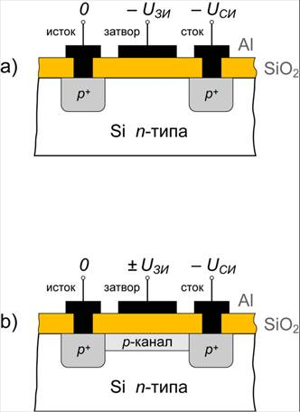
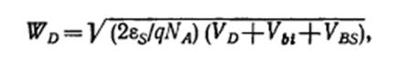

электронный
ресурс по учебной дисциплине 1-58 01 01 - "ИНЖЕНЕРНО-ПСИХОЛОГИЧЕСКОЕ ОБЕСПЕЧЕНИЕ ИНФОРМАЦИОННЫХ ТЕХНОЛОГИЙ"
|
||
| Оглавление | Программа | Теория | Практика | Контроль знаний | Об авторах | ||
|
Практика
ЛАБОРАТОРНАЯ РАБОТА №12 Интеграция технологических процессов изготовления микроизделий Цель работы: Исследовать зависимость изменения величины порогового напряжения от смещения на подложке для полевых МОП-транзисторов. Написать программу и построить зависимости выходных параметров от входных. Теоретические сведения МОП-структура — полупроводниковая структура, применяемая при производстве микросхем и дискретных полевых транзисторов. Полупроводниковые приборы на основе этой структуры называют МОП-транзисторами (от слов «металл-оксид-полупроводник»), МДП-транзисторами (от слов «металл-диэлектрик-полупроводник») или транзисторами с изолированным затвором (так как у таких транзисторов затвор отделён от канала тонким слоем диэлектрика). Полевой транзистор на основе структуры металл — окисел — полупроводник—прибор (МОП), наиболее широко используемый в СБИС. Принцип действия приборов на основе полевого эффекта был предложен еще в 30-е годы Лилиенфельдом и Хейлом. Первый работающий полевой МОП-транзистор, в котором в качестве подзатворного диэлектрика использовалась термически выращенная двуокись кремния, был продемонстрирован в 1960 г. Полевой транзистор с изолированным затвором — это полевой транзистор, затвор которого отделён в электрическом отношении от канала слоем диэлектрика. В кристалле полупроводника с относительно высоким удельным сопротивлением, который называют подложкой, созданы две сильно легированные области с противоположным относительно подложки типом проводимости. На эти области нанесены металлические электроды — исток и сток. Расстояние между сильно легированными областями истока и стока может быть меньше микрона. Поверхность кристалла полупроводника между истоком и стоком покрыта тонким слоем (порядка 0,1 мкм) диэлектрика. Так как исходным полупроводником для полевых транзисторов обычно является кремний, то в качестве диэлектрика используется слой
двуокиси кремния SiO2, выращенный на поверхности кристалла кремния путём высокотемпературного окисления. На слой диэлектрика нанесён металлический электрод — затвор. Получается структура, состоящая из металла, диэлектрика и полупроводника. Поэтому полевые транзисторы с изолированным затвором часто называют МOП-транзисторами. Входное сопротивление МOП-транзисторов может достигать 1010…1014 Ом (у полевых транзисторов с управляющим p-n-переходом 107…109), что является преимуществом при построении высокоточных устройств. Существуют две разновидности МOП-транзисторов: с индуцированным каналом и со встроенным каналом. В МOП-транзисторах с индуцированным каналом (рис. 1, а) проводящий канал между сильнолегированными областями истока и стока отсутствует и, следовательно, заметный ток стока появляется только при определённой полярности и при определённом значении напряжения на затворе относительно истока, которое называют пороговым напряжением (UЗИпор). В МOП-транзисторах со встроенным каналом (рис. 1, б) у поверхности полупроводника под затвором при нулевом напряжении на затворе относительно истока существует инверсный слой — канал, который соединяет исток со стоком. Изображённые на рис. 1 структуры полевых транзисторов с изолированным затвором имеют подложку с электропроводностью n-типа. Поэтому сильнолегированные области под истоком и стоком, а также индуцированный и встроенный канал имеют электропроводность p-типа. Если же аналогичные транзисторы созданы на подложке с электропроводностью p-типа, то канал у них будет иметь электропроводность n-типа.  a) — с индуцированным каналом, b) — со встроенным каналом Рисунок 1 – Устройство полевого транзистора с изолированным затвором В основе подавляющего большинства современных микросхем (и цифровых, и аналоговых) лежит так называемый МОП-транзистор, поэтому одним из важных направлений развития микроэлектроники является миниатюризация (маштабирование) транзисторов. Зачем производители всячески стараются уменьшить размеры полевых транзисторов? Очевидно, что большее количество транзисторов на кристалле позволяет, во-первых, создавать более сложные, многофункциональные, вместительные и производительные микросхемы, а также делать кристаллы компактнее, то есть размещать больше кристаллов на одной кремниевой пластине, что в итоге снижает их себестоимость. Уменьшение размеров приборов для повышения плотности и компоновки может быть достигнуто различными путями. При этом основной задачей становится сохранение первоначальных характеристик приборов. Принципы масштабирования для биполярных приборов основаны на оптимизации произведения мощности на задержку сигнала для конкретной биполярной схемы. Ниже изложены условия, необходимые для достижения этой цели. При уменьшении горизонтальных размеров биполярных ИС с заданным коэффициентом вертикальные размеры приборов (т. е. толщина эпитаксиального слоя, ширина базовой области, глубина эмиттерной области) уменьшаются примерно с тем же коэффициентом, а плотность тока возрастает прямо пропорционально квадрату этого коэффициента. Уровень легирования коллектора (в эпитаксиальном слое) должен оставаться пропорциональным плотности эмиттерного тока, чтобы избежать эффекта выдавливании базы. Для предотвращения прокола базовой области при уменьшении ее толщины уровень легировании на базе повышается обратно пропорционально квадрату уменьшения ее толщины. При этом происходит и уменьшение глубины эмиттерной области, что необходимо для сохранения контроля над толщиной базовой области и величиной заряда в базе. Поэтому при уменьшении размеров приборов эффекты, связанные с высоким уровнем легирования, такие, как сужение ширины запрещенной зоны, становятся более существенными как для базовой, так и для эмиттерной областей. Рабочее напряжение при уменьшении размеров биполярных приборов остается почти неизменным, поскольку напряжение включения р—n-переходов относительно нечувствительно к геометрии приборов и уровню легирования. Рассмотрим основные принципы миниатюризации полевых МОП-транзисторов при уменьшении физических размеров этих приборов на масштабный коэффициент К (К>1). Для того чтобы при уменьшении размеров прибора сохранить внутренние электрические поля на том же уровне, необходимо понизить рабочие напряжения также на коэффициент К. Такие физические размеры, как толщина окисла, длина затвора, ширина транзистора и глубина перехода, уменьшаются пропорционально К. Пороговое напряжение понижается почти пропорционально К. поскольку изменяются размеры области обеднения перехода. Используя эти единообразные принципы масштабирования можно показать, что ток такого уменьшенного прибора также уменьшается пропорционально К. и поэтому «сопротивление» прибора V/I остается неизменным. Поскольку в ИС происходит уменьшение всех размеров пропорционально К (размеры межсоединений уменьшаются так же, как и размеры активных элементов), то число элементов на единицу площади ИС возрастет пропорционально К2. В первом приближении уменьшение емкостных элементов схемы происходит пропорционально К (площадь элементов уменьшается пропорционально К2, а толщина диэлектрика уменьшается пропорционально К). Следовательно, время задержки VC/I) схемы также уменьшится пропорционально К. Рассеиваемая мощность (VI) понизятся пропорционально К2 и произведение мощности на время задержки уменьшится (VI • VС/I) пропорционально К3. Возрастание подпорогового тока стока полевого МОП- транзистора при VG = VTменее чем на 10% при увеличении VD является критерием поведения прибора как прибора с длинным каналом (подпороговый ток в приборах с длинным каналом не зависит от VD при VD >3kT/q). Минимальная длина канала Lmin полевого МОП-транзистора, при которой еще сохраняются его характеристики как прибора с длинным каналом, определяется эмпирическим соотношением Lmin = 0,86 [rjd(Ws+Wd)2]1/3 (1) где rj (мкм) —глубина р—n-перехода областей истока и стока, d (нм)— толщина окисла и Ws + Wd (мкм)—сумма ширины обедненных областей истока и стока, полученная согласно теории одномерного резкого р—n-перехода. При однородном уровне легирования подложки NA  (2) где VBS—величина смещения на подложке, а Vbi — встроенный потенциал р—n-перехода(Ws = Wd при VD=0). При использовании этой модели различные параметры прибора можно подбирать независимо, согласовывая их более гибким образом с необходимой величиной Lmin и чем при уменьшении всех размеров на постоянный коэффициент. Однако приборы, используемые в качестве элементов СБИС, обычно проявляют короткоканальные эффекты. Поэтому, как только конструкторы схем начинают принимать во внимание эти эффекты, ИС становятся более качественными. При масштабном уменьшении полевых МОП-транзисторов р-канальные МОП-приборы начинают функционировать так же, как и n-канальные МОП-приборы, поскольку скорость насыщения дырок становится сравнима со скоростью насыщения электронов. Кроме того, дырки обладают гораздо более низким коэффициентом ударной ионизации, чем электроны, поэтому токи подложки и затвора, вызванные высокими электрическими полями на стоке, на несколько порядков ниже для р-канальных МОП-приборов по сравнению с аналогичными по размерам n-канальными приборами. Напряжение питания при уменьшении размеров элементов ИС обычно остается прежним. Это связано с тем, что ИС функционируют в системе и сопряжены с множеством ИС других семейств, которые работают при стандартном напряжении питания (например, 5В). Характеристики приборов после их миниатюризации изучались при снижении напряжения питания на коэффициент К (постоянное электрическое поле СЕ), сохранении постоянного напряжения питания (СV) и квазипостоянном уменьшении напряжения (QСV), когда напряжение питания уменьшается на √K. Исходя из разных предположений, характерных для конкретной модели масштабного уменьшения, можно прийти к различным выводам относительно того, каким образом можно достичь оптимального снижения напряжения питания. Проблемы миниатюризации. С уменьшением размеров транзисторов до нескольких нанометров (и росте частоты их работы), пропорционально уменьшается число электронов/дырок, задействованных в переносе тока, также резко возрастает роль квантовых эффектов в нанотранзисторах (одним из следствий чего является существенный рост «шума» и утечек). Еще одним вредным эффектом при миниатюризации транзисторов является необходимость снижения их рабочего напряжения — для текущих и ближайшего будущего микропроцессоров оно составляет 0,7–1,5 В. Однако при напряжении около 1 В уже трудно полностью «закрывать» транзисторы, и в результате они «протекают» (так называемая утечка от истока к стоку). Задание для выполнения лабораторной работы Постройте зависимость изменения величины порогового напряжения ∆VT от смещения на подложке VBS для полевых МОП-транзисторов с толщиной подзатворного окисла 35 нм, сформированных на однородно легированных подложках с уровнем легирования Варианты заданий:
Порядок выполнения работы 1. Напишите программу, обеспечивающую решение задачи. 2. Постройте зависимости выходных параметров от входных. 3. Оформите отчет и защитите лабораторную работу. Содержание отчета 1. Цель работы. 2. Краткие теоретические сведения. 3. Решение задачи. 4. Код программы и скриншоты рабочих окон. 5. Зависимости выходных параметров от выходных. 6. Выводы по работе. Контрольные вопросы 1. Что такое МОП-структура? 2. Что такое полевой транзистор с изолированным затвором? Опишите его структуру. 3. Какие разновидности МОП-транзисторов существуют? 4. Для чего нужна миниатюризация транзисторов? 5. Какие существуют основные принципы миниатюризации полевых МОП-транзисторов? 6. Какие основные проблемы миниатюризации существуют? Практика
|
| (С) БГУИР |